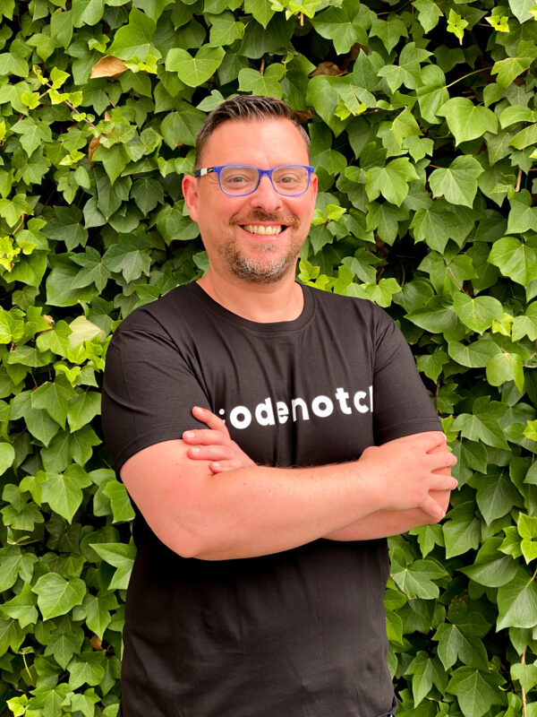

Equipo de Talent & Success
Tu coach personal
Francisco Landeira
Nací en Alemania estudié el Grado en Psicología y Filología Alemana. Tras cursar un máster de Dirección y Gestión de RR.HH, comencé en el mundo
de la consultoría y gestionando el talento en el mundo startup. Conozco muy bien al entorno de la Educación y el tecnológico y sobre todo,
el de la empresas (startups, medianas y grandes). Me apasiona la gestión de la personas y ayudar a las empresas a cumplir sus objetivos.
Actualmente, estoy en la parte de Adquisición del Talento de Producto y Tech. centrado también, en proyectos como Employer branding, candidate experience,
programas de Partners y Student Success. Mi rol implica tener una visión estratégica del Talento, tanto identificar como desarrollarlo en entornos
dinámicos y cambiantes, así como generar valor a las empresas y alcanzar mayor
impacto.
Licenciada en Psicología y docente
Adela Díez
Adela es una pieza clave en Codenotch ya que es la persona que se encarga de realizar la entrevista inicial a los alumnos. Facilita la comunicación de los estudiantes
en todo momento y supone un gran apoyo para ellos a lo largo de la experiencia formativa.
Nuestros profesores

Head of Teachers
José Herrera
José es Ingeniero Superior en Informática por la Universidad Politécnica de Madrid y Doctor por la Universidad Complutense de Madrid. Su pasión por la programación empezó cuando era pequeño, dando sus primeros pasos con tan solo 8 años.
Su currículum no deja indiferente a nadie. Ha trabajado como desarrollador en Banco Santander, como jefe de proyecto durante 4 años en el Banco ING y como ingeniero de investigación en el IMDEA Networks, siendo responsable de varios
proyectos europeos y desempeñando tareas de analista y programador. Actualmente es el director del equipo docente de Codenotch.
Teacher
Carmen Martín
Menchu se graduó en bellas artes, pero decidió redirigir su carrera profesional hacia el mundo del diseño web, combinando sus dos pasiones: el arte y la tecnología.
Dio sus primeros pasos en el diseño web de forma autodidacta, consiguiendo sus primeros empleos como diseñadora freelance.
Tiene conocimientos en UX/UI y maneja herramientas como HTML, CSS, Angular, Figma y Wordpress. El trabajo en equipo, la gestión y el liderazgo la definen como profesional y como persona..
Teacher
Daniel Vera
Daniel decidió dar un cambio radical a su vida profesional. Dejó su trabajo en el mundo de la hostelería y apostó por formarse como desarrollador Full Stack, cambiando así su vida por completo.
Aún siento un perfil completo, sigue formándose día a día con nuevas metodologías y herramientas. Algunas de las tecnologías que domina son, JavaScript, TypScript, Java, HTML5, CSS, Node.js, GIT, Angular, SQL, entre otras.
Es un apasionado de la tecnología disfruta de ayudar a otros a aprender.
Profesor
Pablo Talavante
Ingeniero Industrial especializado en Electrónica y Automática, aprendió Inteligencia Artificial de forma autodidacta y la ha aplicado a proyectos tan dispares como la música o la medicina. Su especialidad es Computer
Vision y presta mucha atención a la parte matemática y visualización de datos.
Profesor
José Herrera
José es Doctor y Profesor en la facultad de informática de la Universidad Complutense de Madrid. Ha trabajado como desarrollador en Banco Santander;como jefe de proyecto durante 4 años en el Banco ING y como ingeniero de
investigación en el IMDEA Networks, siendo responsable de varios proyectos europeos, y desempeñando tareas de analista y programador.
Profesor
José Luis Llorente
Profesional que ha dirigido y desarrollado aplicaciones Big Data utilizando las tecnologías HDFS, Spark SQL, NiFi, Kafka, Elastic Search y MongoDB utilizando Python y Scala como lenguajes de programación. Ha impartido seminarios
y cursos de introducción a Big Data, Arquitectura Big Data con Spark, Kafka, Nifi y MongoDB, y IBM BIG DATA.